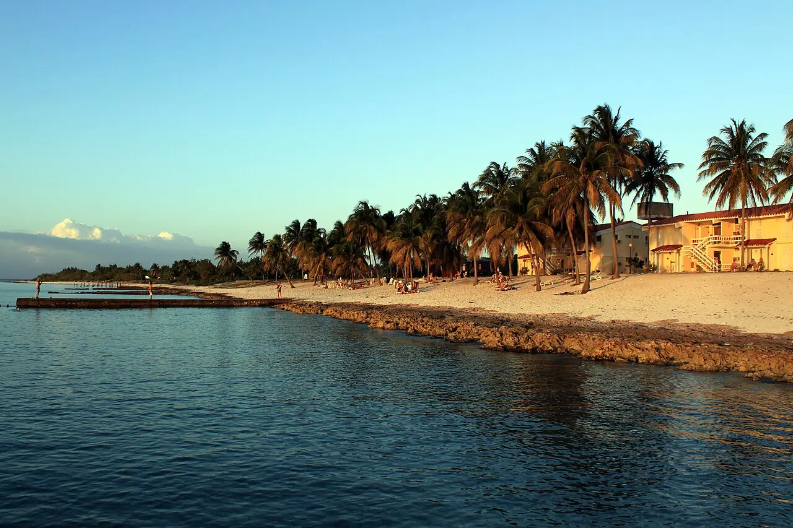

María la Gorda
Pinar del Río, Cuba · plongée, snorkeling, baignade

Plage isolée au fond de la baie de Corrientes, à l’extrême ouest de Cuba, dans la péninsule de Guanahacabibes, réserve de biosphère de l’UNESCO. Les tombants coralliens commencent à quelques minutes de bateau du centre de plongée.
- Lieu
- Pinar del Río, Cuba
- Niveau
- Intermédiaire
- Activités
- plongée, snorkeling, baignade
- Type d'eau
- Mer / océan
- Coordonnées
- 21.82, -84.50 (position approximative du secteur)
Dangers à connaître
- Plongées sur tombant depuis le bateau : reste avec ton guide et surveille ta profondeur.
- Corail et oursins près du bord : entre dans l’eau avec des chaussons.
- Moustiques et moucherons nombreux à terre, surtout en fin de journée.
Le conseil d'Ocean Buddy
Le site est très isolé : fais le plein d’eau et d’essence avant la route depuis Pinar del Río et réserve tes plongées auprès du centre sur place.
Ouvrir dans Ocean Buddy Télécharger sur l'App Store
Source : Fiche Ocean Buddy · septembre 2026 · à vérifier localement.